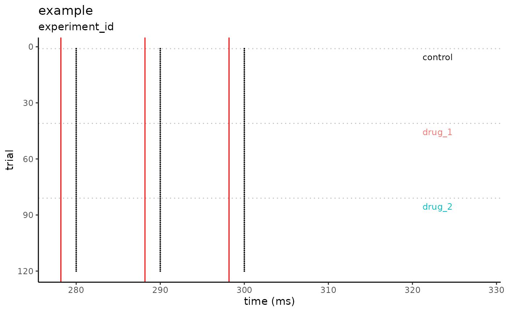

Generate Spike Raster Plot
Usage
plot_spike_raster(
df,
filename,
id,
time_of_stim,
condition_names,
auto_window = TRUE,
auto_window_size = 10,
auto_window_symmetric = FALSE,
manual_condition_color = NULL,
plot_conditions_only = TRUE
)Arguments
- df
Data Frame or Tibble with the following columns:
sweep
time_ms
condition
- filename
Character, a single file name.
- id
Character, experiment id.
- time_of_stim
List, stimulus times in milliseconds.
- condition_names
Character vector with condition titles.
- auto_window
Boolean, automatically set the x-axis values based upon the first and last stimuli. Default is
TRUEand will use the argsauto_window_sizeandauto_window_symmetricto set the x-axis. IfFALSE, the entire x-axis is plotted using the values c(0,NA).- auto_window_size
Integer, the amount of time in milliseconds to plot after the last stimulus. Default is
10ms.- auto_window_symmetric
Boolean, will set the x-axis to plot
auto_window_sizebefore and after the first and last stimuli. Default isFALSE, and will start the x-axis at the first stimuli.- manual_condition_color
Character, vector of color values. Default is
NULL, which will force argauto_condition_colortoTRUE, automatically generating color values.- plot_conditions_only
Boolean, Default is
TRUE.
See also
standardize_event_time to auto create
time_mscolumn.ggplot_color_hue to see how 'auto_condition_color' is determined.
Examples
conditions <- c("control", "drug_1", "drug_2")
simple_df <-
data.frame(
sweep = rep(1:120, each = 3),
time_ms = rep(c(280, 290, 300), times = 120),
condition = rep(conditions, each = 120)
)
plot_spike_raster(
df = simple_df,
filename = "example",
id = "experiment_id",
time_of_stim = c(278.18, 288.18, 298.18),
condition_names = conditions,
auto_window = TRUE,
auto_window_size = 30,
auto_window_symmetric = FALSE,
plot_conditions_only = TRUE
)
